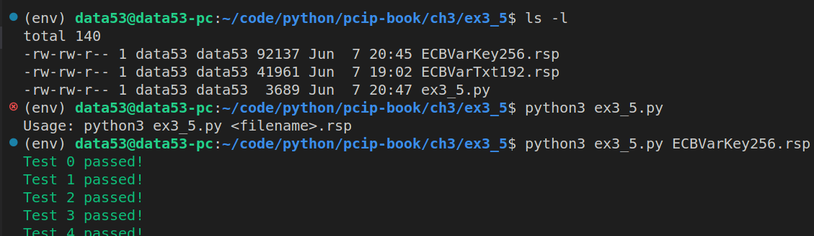
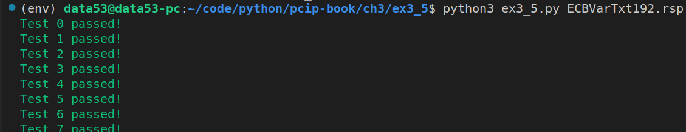

3.5 ALL NIST KATS
EXERCISE 3.5: ALL NIST KATS
Write a program that will read one of these NIST KAT “rsp” files, and parse out the encryption and decryption KATs. Test and validate your AES library on all vectors on a couple of ECB test files.
# ex3_5.py
from cryptography.hazmat.primitives.ciphers import Cipher, algorithms, modes
from cryptography.hazmat.backends import default_backend
from colorama import Fore, Style
import sys
import os
def encrypt_using_aes_ecb(plaintext: bytes, key: bytes) -> bytes:
aesCipher = Cipher(algorithms.AES(key), modes.ECB(), backend=default_backend())
aesEncryptor = aesCipher.encryptor()
ciphertext = aesEncryptor.update(plaintext)
return ciphertext
def decrypt_using_aes_ecb(ciphertext: bytes, key: bytes) -> bytes:
aesCipher = Cipher(algorithms.AES(key), modes.ECB(), backend=default_backend())
aesDecryptor = aesCipher.decryptor()
plaintext = aesDecryptor.update(ciphertext)
return plaintext
class ASingleKAT:
def __init__(self, count: int, key: bytes, plaintext: bytes, ciphertext: bytes):
self.count = count
self.key = key
self.plaintext = plaintext
self.ciphertext = ciphertext
def testInEncryptMode(self):
result = encrypt_using_aes_ecb(plaintext=self.plaintext, key=self.key)
if result == self.ciphertext:
print(Fore.GREEN + f"Test {self.count} passed!")
print(Style.RESET_ALL, end='')
else:
print(Fore.RED + f"Test {self.count} Failed!")
print(Style.RESET_ALL, end='')
def testInDecryptMode(self):
result = decrypt_using_aes_ecb(ciphertext=self.ciphertext, key=self.key)
if result == self.plaintext:
print(Fore.GREEN + f"Test {self.count} passed!")
print(Style.RESET_ALL, end='')
else:
print(Fore.RED + f"Test {self.count} Failed!")
print(Style.RESET_ALL, end='')
@staticmethod
def correctType(kat: dict[str,str]):
kat['count'] = int(kat['count'])
kat['key'] = bytes.fromhex(kat['key'])
kat['plaintext'] = bytes.fromhex(kat['plaintext'])
kat['ciphertext'] = bytes.fromhex(kat['ciphertext'])
if __name__ == '__main__':
if len(sys.argv) != 2:
print(f"Usage: python3 {sys.argv[0]} <filename>.rsp")
exit(-1)
filename = sys.argv[1]
if not os.path.exists(filename):
print(f"File {filename} does not exist!")
exit(-1)
with open(filename, 'r') as f:
encrypt_mode = True
while True:
single_line = f.readline()
if single_line == '':
# end of file is reached.
break
if single_line.startswith('#'):
# this line is a comment. So ignore it.
continue
single_line = single_line.strip()
if len(single_line) == 0:
# this line is an empty line.
continue
if single_line == "[ENCRYPT]":
encrypt_mode = True
continue
if single_line == "[DECRYPT]":
encrypt_mode = False
continue
if single_line.startswith('COUNT'):
kat = {
"count": None,
"key": None,
"plaintext": None,
"ciphertext": None,
}
for _ in range(4):
data = list(map(lambda x:x.strip(), single_line.split('=')))
kat[data[0].lower()] = data[1]
single_line = f.readline()
ASingleKAT.correctType(kat=kat)
kat = ASingleKAT(**kat)
if encrypt_mode:
kat.testInEncryptMode()
else:
kat.testInDecryptMode()The beginning of these NIST KAT files look as follows:
# CAVS 11.1
# Config info for aes_values
# AESVS VarKey test data for ECB
# State : Encrypt and Decrypt
# Key Length : 256
# Generated on Fri Apr 22 15:11:30 2011
[ENCRYPT]
COUNT = 0
KEY = 8000000000000000000000000000000000000000000000000000000000000000
PLAINTEXT = 00000000000000000000000000000000
CIPHERTEXT = e35a6dcb19b201a01ebcfa8aa22b5759
COUNT = 1
KEY = c000000000000000000000000000000000000000000000000000000000000000
PLAINTEXT = 00000000000000000000000000000000
CIPHERTEXT = b29169cdcf2d83e838125a12ee6aa400
COUNT = 2
KEY = e000000000000000000000000000000000000000000000000000000000000000
PLAINTEXT = 00000000000000000000000000000000
CIPHERTEXT = d8f3a72fc3cdf74dfaf6c3e6b97b2fa6
COUNT = 3
KEY = f000000000000000000000000000000000000000000000000000000000000000
PLAINTEXT = 00000000000000000000000000000000
CIPHERTEXT = 1c777679d50037c79491a94da76a9a35
# and goes on and on and on....Running the above program, we get the following:
 
You can download these “rsp” files from https://csrc.nist.gov/CSRC/media/Projects/Cryptographic-Algorithm-Validation-Program/documents/aes/KAT_AES.zip